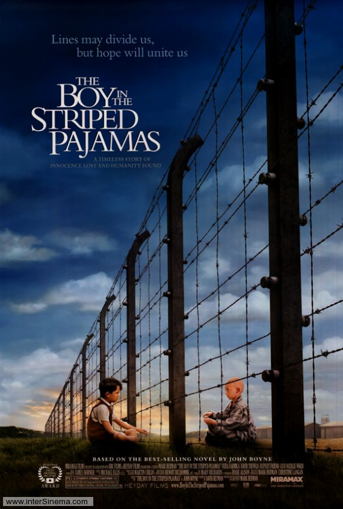
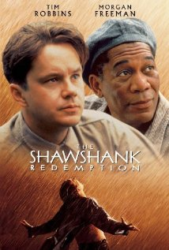
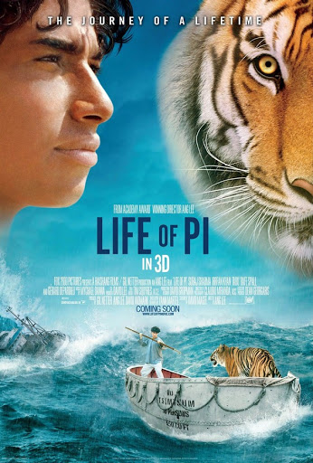

Mutlaka İzlenmesi Gereken Yabancı Filmler
Kaydol Login
1.The Pianist

Roman Polanski’nin üç Oscar kazanan filmi II. Dünya Savaşı sırasında yaşanan gerçek bir dramı konu alır. Polonya’lı ünlü piyanist Wladyslaw Szpilman’ın anılarını anlattığı aynı isimli kitaptan sinemaya uyarlanan film, Nazi işgali altındaki Polonya’da yaşamanın imkansızlaştırıldığı bir dönemde, bir şekilde esir kampına gitmekten kurtulan ünlü piyanistin Varşova’nın kenar mahallelerindeki hayatta kalma mücadelesine odaklanır. Varoşlarda tam anlamıyla sefil bir hayat süren müzisyen, diğer halkla birlikte, kıtlığa ve aşağılanmalara maruz kalsa da kahramanca mücadele edecektir. Günü gelip oradan kaçma şansı bulduğundaysa başkentin harabelerine sığınacak, beklemediği bir anda gelen bir yardımla umudunu yeniden kazanacaktır. Film, En İyi Erkek Oyuncu dalında Oscar alan Adrien Brody'nin de filmografisinin en güçlü işlerinden biri.
2.The Boy in the Striped Pajamas (Çizgili Pijamalı Çocuk)
II. Dünya Savaşı sırasında bir Alman askerinin 8 yaşındaki çocuğu ile toplama kampı Auschwitz'deki bir Yahudi çocuğun arkadaşlığını ele alan filmdir. Nazi Almanyası Bruno’nun babasını görevli olarak Polonya’ya gönderir. Bruno, kasabadaki toplama kampının tel örgülerinin öbür yanındaki bir çocukla arkadaş olur. Ancak iki çocuk arasında gelişen bu dostluk, özellikle oğlunun bu kampla ilgili gerçeği öğreneceğinden kuşkulanan Alman annenin endişelerini artıracaktır. Bruno ve ailesinin yeni evleri bir buçuk milyon Yahudi'nin Nazilerce öldürüldüğü Auschwitz toplama ve yok etme kampı'nın bitişiğindedir.
3.The Shawshank Redemption (Eseratin Bedeli)
Andy Dufresne, genç ve başarılı bir bankacıdır. Karısını ve karısının sevgilisini öldürmek suçundan yargılanır ve ömür boyu hapis cezası alır. Shawsank Hapishanesi'nde dayak, işkence,tecavüz, her türlü durum yaşanmaktadır fakat Andy gene de hayata bağlı ve iyimserdir. Bu tutumu etrafındakileri de etkiler. Andy umutlu bakış açısıyla çevresindeki tüm mahkumları, parmaklıklar arkasında bile özgür bir yaşam olabileceğine inandırır. Andy'nin bu çabalarına ortak olacak bir arkadaşı da olacaktır: Red. Bir Stephen King uyarlaması olan filmde Morgan Freeman ve Tim Robbins başrolde. Film aralarında en iyi film adaylığı da olmak üzere tam 7 dalda Oscar'a aday gösterildi.
4.Life of Pi (Pi'nin Yaşamı)
Hindistan’dan Kanada’ya giden bir yük gemisi, içindeki hemen hemen tüm canlılarla birlikte trajik şekilde batar.
Bir can kurtaran filikası, uçsuz bucaksız vahşi Pasifik Okyanusu'nun ortasında yapayalnız kalır. Sandalın hayatta
kalmayı başarabilen mürettebatı ise bir sırtlan, kırık bacaklı bir zebra, bir orangutan, üç yüz kiloluk bir Bengal
kaplanı ve Pi adlı 16 yaşında Hintli bir çocuktan oluşmaktadır. Pi'nin hayvanat bahçesi işleten ve hayvanlarıyla
göç yoluna koyulan ailesi, batan gemide yaşamını kaybetmiştir.
Pi, kurtuluş yok gibi görünen bu okyanusta zayıf bir sandalda yanındaki hayvanlarla birlikte hayatta kalma savaşı
verir ve keskin zekası ve zooloji bilgisiyle besin zincirine kurban gitmez. Ama şimdi Bengal Kaplanı ile teknede baş
başa kalmıştır. Dev kaplana yem olmamak için hayvanla anlaşmanın ve yakınlaşmanın yollarını bulur. Sıra dışı yolculuk
sona ermeden büyülü bir adaya varacaktır...
Oscarlı sinemacı Ang Lee'nin yönetmenliğinde sıra dışı bir öykü sunan filmin kadrosu ise oldukça renkli. Daha önce
oyunculuk deneyimi bulunmayan Suraj Sharma'nın Pi'yi canlandırdığı yapımda, ayrıca Tobey Maguire, Irrfan Khan, Adil
Hussain rol alıyor
Bizimle İletişime Geç!
Call: 555555555 OR Email : ecenr502@gmail.com
© 2020 Tüm Hakları Saklıdır.
Hazırlayan Ece Nur DOĞAN